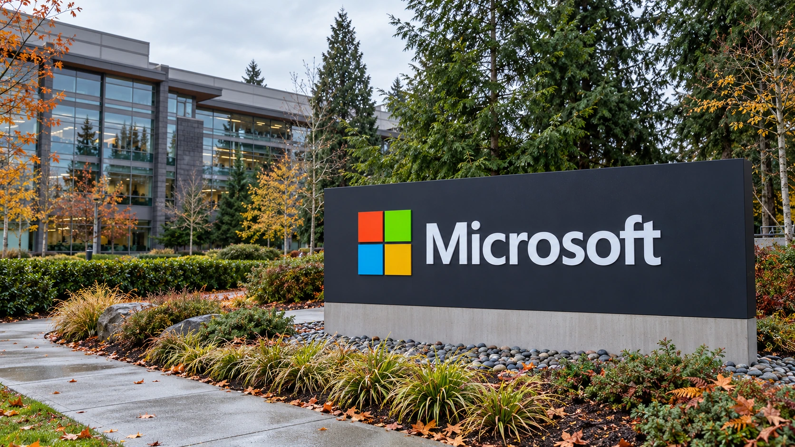

Microsoft Offers Buyouts to About 60,000 Workers as It Reshapes Its Workforce
The voluntary offer covers selected teams in four countries. Eligibility reaches roughly 27% of the workforce, but actual departures remain unknown.

Microsoft is offering voluntary buyouts to about 60,000 employees, extending its workforce reshaping to a group equivalent to more than a quarter of its global staff. The company confirmed the eligibility figure to GeekWire on Monday. It has not announced that 60,000 people will leave, and the eventual reduction will depend on how many workers accept.
In a published employee communication, Chief People Officer Amy Coleman said the time-limited offer applies to eligible staff at internal level 70 and below in participating teams in Canada, India, the United Kingdom and the United States. Some organizations are excluded. Microsoft described financial support and career-planning resources for employees choosing to make a transition outside the company.
The offer puts labor costs and the shape of Microsoft's business back in focus as investors assess the resources required for its AI expansion. A smaller workforce could reduce recurring expenses, but an exit program also creates an immediate cost and can remove experienced staff. The number eligible for an offer does not reveal either the eventual savings or the effect on execution.
A large invitation, with an unknown take-up
Microsoft's annual report lists approximately 223,000 full-time employees as of June 30, including 121,000 in the United States and 102,000 internationally. Comparing the new eligibility figure with that dated total gives roughly 27%. It is a measure of the program's potential reach, rather than a forecast that Microsoft's headcount will fall by the same proportion.
GeekWire reported that Microsoft expects a substantially smaller participation share than in its earlier voluntary retirement program, which attracted roughly 30% of eligible employees. That earlier offer targeted longtime workers more likely to retire. Applying its acceptance rate to this broader population would therefore produce an unsupported estimate of how many people will leave under the new offer.
Business Insider reported that employees have until early December to decide, with departures at year-end, and that terms would resemble Microsoft's standard severance. The published company memo does not set out a universal payment amount. An individual's package should consequently not be inferred from one headline figure or from terms that applied to a different worker in an earlier round.
Why the financial effect is more complicated than headcount
A voluntary departure can exchange an upfront payment for lower future compensation costs. How quickly that pays back depends on the package, the role, replacement hiring and whether work shifts to contractors or other teams. Our guide to free cash flow explains why a cash payment today and a reduction in later operating expenses affect different reporting periods.
Microsoft remains a highly profitable business. Its fiscal 2026 annual report shows revenue of $331.84 billion and operating income of $155.24 billion for the year ended June 30. Those historical results help establish scale; they do not measure the new program's cost. The company has not supplied a take-up result or a savings figure for this offer.
Bloomberg described the move as part of cost control and workforce changes for the AI era, with some data-center, sales and marketing personnel outside the offer. That selectivity matters: labor reductions across some functions can coexist with investment and hiring in others. It does not establish that a specific departing employee's job has been replaced by an AI system.
The test is what the business can deliver afterward
Our reporting on Microsoft's reported Nscale lease exit shows another side of the same capital-allocation problem: spending plans depend on usable infrastructure and delivery schedules. Workforce decisions deserve an equally practical assessment. Lower compensation expense helps only if the remaining organization can maintain products, serve customers and deliver the work supporting future revenue.
Microsoft is also experimenting with new ways of organizing AI work, including the Agensh framework for coordinating software agents. That research and Monday's employment offer are distinct developments. The evidence investors need next is actual participation, disclosed exit costs, subsequent staffing levels and operating performance. Until those arrive, the confirmed news is a broad voluntary invitation, with its financial outcome still open.
Sources and methodology
Sources checked October 26, 2026. Company statements, reported findings and forecasts are attributed in the text. Financial and operational implications are editorial analysis.
- Microsoft: Amy Coleman’s published employee communication, October 26
- GeekWire: company confirmation of eligibility and expected participation
- Microsoft: 2026 annual report, human capital and financial statements
- Business Insider: company confirmation, decision deadline and package context
- Bloomberg: cost-cutting context and excluded employee groups